地政学
ダラスは海港も山脈も持たないが、北テキサスの平原で鉄道、高速道路、空港、企業本社を集めた。中南部と西部、メキシコ湾岸、内陸州を結ぶ位置が、サンベルトの成長を実務の力へ変える。広い土地が都市を押し広げる。

🇺🇸 アメリカ合衆国 / テキサス州 / World City Atlas
港のない内陸でありながら、空港、高速道路、企業本社、金融、不動産、エネルギー、通信、スポーツ、郊外住宅を束ねるサンベルトの巨大都市圏。フォートワース側の牧畜と航空宇宙、ダラス側の業務地区と文化施設を合わせて読む街です。
都市の骨格
ダラスは港湾都市ではない。トリニティ川の浅い谷、鉄道、高速道路、DFW空港、広大な宅地開発が、内陸の弱さを結節性へ変えてきた。数字の大きさだけでなく、移動する人と土地の広がりが都市を形づくる。
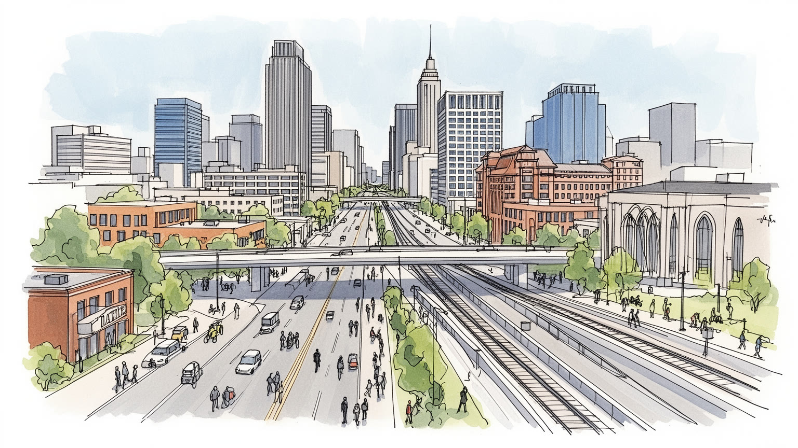
ダラスは海港も山脈も持たないが、北テキサスの平原で鉄道、高速道路、空港、企業本社を集めた。中南部と西部、メキシコ湾岸、内陸州を結ぶ位置が、サンベルトの成長を実務の力へ変える。広い土地が都市を押し広げる。
金融、保険、不動産、航空、通信、医療、エネルギー、物流が雇用を厚くする。高所得の専門職と倉庫、建設、清掃、飲食、介護の仕事が近く、移民労働と郊外通勤が経済を動かす。車で働く都市圏である。賃金も問う。
黒人教会、ラティーノのカトリックと福音派、南部バプテスト、移民宗教、カントリー、ブルース、現代美術が混ざる。富裕な文化施設と地区の祭りが、企業都市の硬さに声と祈りを与える。日曜の信仰も都市を結ぶ。
旅行者は美術館、ディーリー広場、スポーツ、音楽、ショッピング、フォートワース方面を巡るが、住民は暑さ、車通勤、住宅費、学校区、嵐、保険と向き合う。観光の外側に広い生活圏がある。日常は高速道路の距離を測る。
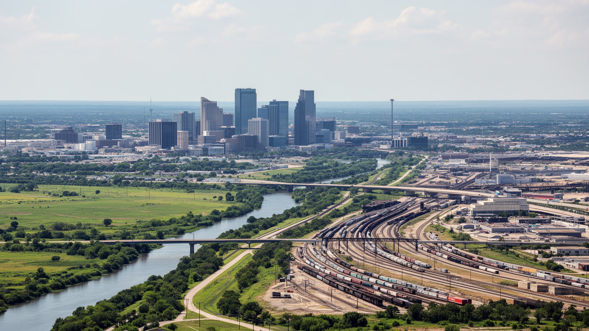
ダラスを読む入口は、海に面しない北テキサスの平原である。トリニティ川は都市名を世界へ押し出す大河ではなく、かつては洪水と低地を伴う細い地形の軸だった。にもかかわらず、鉄道、綿花取引、州内道路、後の州間高速道路、DFW空港が重なり、内陸の弱さは広い接続性へ変わった。ダラスとフォートワースは一体の都市圏として語られるが、業務と金融のダラス、牧畜市場と航空宇宙のフォートワース、郊外の住宅と企業キャンパスはそれぞれ違う時間を持つ。平らで広い土地は、空港、倉庫、住宅団地、ショッピングモール、学校区を外へ外へ広げる力になった。一方で、その広がりは車への依存、長い通勤、公共交通の弱さ、洪水管理、緑地の分断を生む。地図で見れば単純な平原でも、実際には高速道路の結節、自治体境界、学校区、商業中心の力学が細かく生活を分ける。ダラスは水辺に寄り添う都市ではなく、移動の線を束ねることで成長した都市である。だから中心部の高層ビルだけを見ても、この都市の本体は見えない。空港へ向かう道、郊外の環状道路、低地の河川敷、フォートワースへ伸びる距離を合わせて初めて、北テキサスの内陸都市圏がどのように世界経済へ接続したかが分かる。草地と新興住宅地の境界を見れば、成長が今も地表を塗り替えていることが分かる。地理は背景ではなく、開発の速度を決める条件である。
ダラスの経済的な顔は、企業本社、金融、不動産、保険、専門サービスが集まる業務都市である。州所得税のないテキサスの制度、広い土地、空港の利便性、南部と西部の市場への近さは、企業移転や地域統括機能を呼び込んできた。中心部やアップタウン、ラスコリナス、プレイノ、フリスコには、ガラスのオフィス、会議施設、ホテル、投資会社、法律事務所、コンサルティング会社が並び、ダラスはサンベルトの意思決定拠点として存在感を強める。ただし、企業都市の豊かさは均一ではない。高所得の専門職がレストラン、住宅、学校、文化施設を支える一方、清掃、警備、配達、飲食、建設、保育、介護の労働は低賃金になりやすい。オフィス移転や再開発は税収を増やすが、家賃上昇と通勤距離の拡大も招く。金融の数字は大きくても、南部ダラスの投資不足や人種別の資産格差は簡単に消えない。ダラスの企業経済を読むには、本社ロビーだけでなく、郊外キャンパスに通う車列、契約労働の不安定さ、住宅ローン、学校区の評価、都市の税制を見る必要がある。成長の速さは魅力であると同時に、誰が成長の近くに住めるのかという問いを突きつける。大きなビルは都市の信用を示すが、その足元の仕事と住まいを見なければ、企業都市の実像はつかめない。会議室で決まる投資は、バス路線や保育所の不足を通じて家庭の時間にも響く。
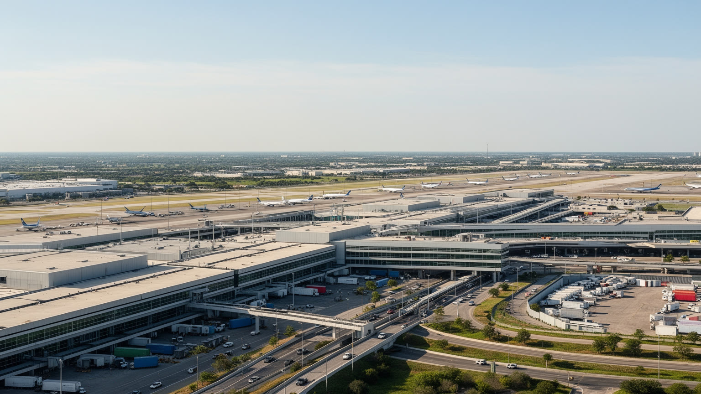
ダラス都市圏の世界性を最も実務的に支えるのが、ダラス・フォートワース国際空港である。DFWは旅客だけでなく、貨物、企業出張、国際会議、航空会社の運航拠点、整備、ホテル、レンタカー、倉庫を抱え、内陸都市をグローバルな移動網へ接続する巨大な装置になっている。海港を持たないダラスにとって、空港と高速道路は港の代わりに近い。貨物は空港周辺の物流施設や州間高速道路へ流れ、電子部品、医療品、小売商品、オンライン注文品、展示会の機材が都市圏を通過する。空港の便利さは企業誘致の武器であり、同時に夜間勤務、保安、清掃、荷さばき、客室乗務、整備、配車、飲食の膨大な労働を必要とする。滑走路の近さは雇用を生むが、騒音、排気、交通渋滞、土地利用の制約も周辺自治体へ与える。物流倉庫の成長は、広い土地と道路を必要とし、郊外の農地や草地を産業用地へ変えていく。ダラスの空港物流を読むと、都市の力は中心部の金融だけでなく、見えにくい夜間の仕分け、早朝のトラック、空港ホテルで働く人、整備士の技能にも支えられていることが分かる。飛行機で数時間の距離が短くなるほど、都市圏の地理は広がる。DFWはダラスを世界へ開く入口であると同時に、毎日働く人のシフトと道路の混雑で動く巨大な職場でもある。空港の時刻表は、都市圏の商談、家族訪問、移民の移動、展示会の予定を静かに編んでいる。
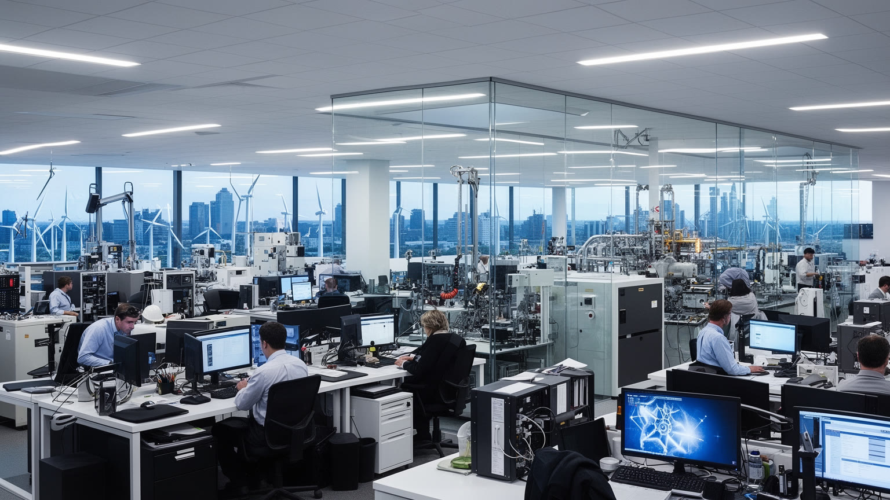
ダラスはヒューストンのような港湾石油都市ではないが、テキサスのエネルギー経済と深く結びついている。石油、天然ガス、電力、パイプライン、投資、法律、土地取引、技術サービスは、ダラスの金融と専門職を通じて動く。周辺には通信、半導体、データセンター、医療技術、サイバーセキュリティ、ソフトウェア企業も集まり、北テキサスはエネルギーとテックが重なるサンベルトの仕事場になっている。古い石油富は不動産、慈善、大学、文化施設へ流れ、企業都市の自信を作った。一方で、化石燃料への依存、電力網の脆さ、猛暑時の冷房需要、送電の安定、脱炭素投資は現在の課題である。テック産業も、華やかな起業だけでなく、データセンターの電力と水、郊外の用地、専門人材の獲得、移民労働者のサービス職に支えられる。二〇二一年の冬季停電の記憶は、テキサスの成長がインフラの信頼性に依存していることを強く示した。ダラスでエネルギーと技術を読むことは、石油の過去からデジタルの未来へ単純に移る話ではない。電力を使い、土地を開発し、投資を集め、暑い都市を冷やしながら、誰がリスクと利益を負担するのかを見ることである。企業ロゴの背後には、送電線、サーバー、鉱区、法律事務所、冷房の効いた住宅と冷房を節約する世帯が同時に存在している。技術の成長は、電気と水と土地の制約を忘れた瞬間に弱さへ変わる。
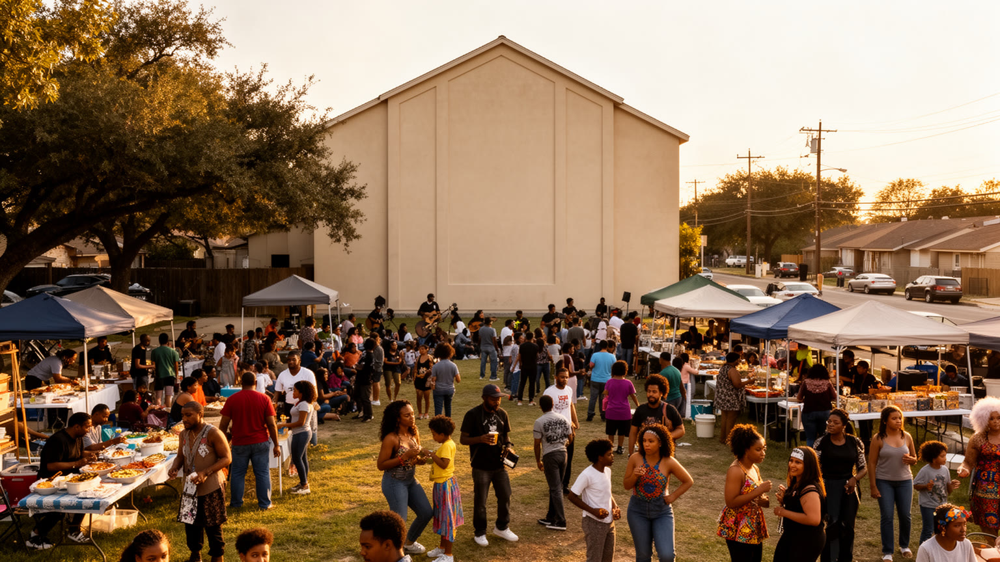
ダラスの文化を企業本社と富裕な消費だけで語ると、南部ダラスやオーククリフの黒人、ラティーノ、移民コミュニティが見えなくなる。黒人教会は礼拝の場であると同時に、教育、相互扶助、公民権運動、葬儀、音楽、地域政治を支えてきた。ラティーノの家庭、カトリック教会、福音派教会、市場、タコス店、祭り、スペイン語メディアは、都市の日常に別のリズムを与える。メキシコとの距離は国境の近さだけではなく、家族送金、食材、建設労働、学校、言語、音楽を通じて生活の内側にある。ダラスには黒人中産階級の歴史、隔離と赤線引きの記憶、警察や学校をめぐる不信、南部の人種秩序が残る一方、新しい移民の起業や若いアーティストの表現も増えている。地区文化は観光用の色彩ではなく、都市が働き、祈り、食べ、抗議し、家族を守る基盤である。高級再開発が進むと、壁画や食文化が魅力として消費される一方、家賃上昇で当事者が押し出される危険もある。ダラスの黒人とラティーノ文化を読むには、教会の駐車場、学校の言語支援、地区の小商い、日曜の食卓、パレード、選挙区を一緒に見る必要がある。企業都市の表面を下から支える声と労働を置き去りにしないことが、この街を理解する基本になる。食堂の厨房、理髪店、家族経営の店、祭りの音楽は、公式な文化施設とは別の都市の記憶を保っている。
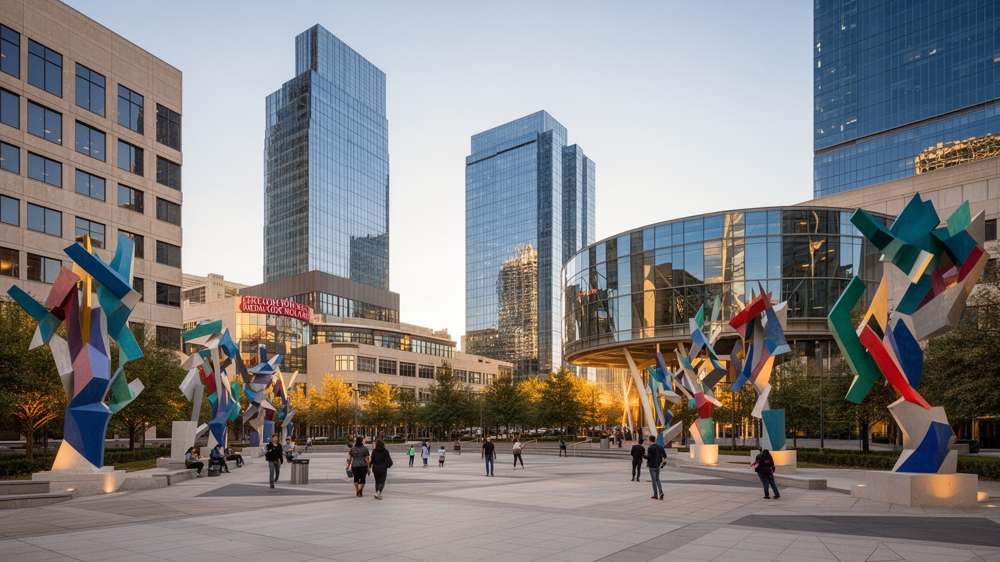
ダラス中心部の芸術地区は、企業都市が文化的な顔を作ろうとしてきた象徴である。美術館、彫刻庭園、交響楽、オペラ、劇場、デザイン性の高い建築が集まり、金融と不動産の街という印象に別の厚みを与える。富裕層の寄付、企業スポンサー、財団、行政の投資は、質の高い文化施設を生んだ。旅行者にとっては歩いて複数の施設を巡れる貴重な都市空間であり、住民にとっては教育プログラム、野外イベント、学生の発表、家族の週末の場にもなる。ただし、文化施設の集積は都市全体の文化を代表するとは限らない。チケット価格、駐車場、公共交通、地区の雰囲気は、低所得の住民や郊外の若者にとって壁になることがある。南部ダラスや移民地区の音楽、壁画、教会芸術、小劇場、学校のバンド活動も、同じ都市の文化である。芸術地区を読むときは、巨大な寄付で作られた空間と、地区で育つ日常の表現を対立させる必要はない。むしろ、両者をつなぐ教育、無料開放、交通、地域連携が都市の文化的な公平さを決める。ダラスの芸術地区は、都市が自分を単なるビジネスの場所ではなく、鑑賞し、学び、集まる場所として見せる舞台である。その舞台が広い住民に開かれるほど、文化は企業の名声ではなく、都市の共有財産に近づく。昼の広場と夜のホールが、車で分散した都市圏に歩く時間を取り戻す役割も持つ。
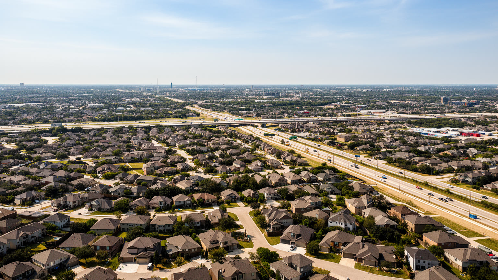
ダラスの生活を理解するには、都心よりもむしろ広大な郊外を見る必要がある。プレイノ、フリスコ、アーリントン、ガーランド、アーヴィング、リチャードソンなどの自治体は、住宅地、企業キャンパス、学校区、モール、スポーツ施設を抱え、都市圏の人口増加を吸収してきた。一戸建てと車を前提にした暮らしは、広さ、学校選択、庭、駐車場、買物の便利さを与える。一方で、長い通勤、道路渋滞、ガソリン代、保険料、公共交通の不足、歩きにくい街路を日常化する。住宅価格の上昇は、移住者や若い世帯に機会を開くと同時に、低所得世帯をさらに遠い場所へ押し出す。学校区の評価は住宅価格と強く結びつき、教育機会の差を固定しやすい。郊外の成長は税収を増やすが、道路、上下水道、排水、警察、消防、学校を維持する費用も膨らむ。古い郊外では空き店舗や老朽化したアパートが増え、新しい郊外では農地や草地が急速に住宅地へ変わる。ダラスの住宅を読むとは、広い家を称賛するだけではなく、その広さを支える土地消費と移動負担を見ることである。郊外は安定した家庭の夢であり、同時に都市圏の格差と環境負荷が見える場所でもある。日々の暮らしは郵便番号、学校区、高速道路の出口によって細かく分かれ、ダラスの社会地図を作っている。住宅の広さは魅力だが、孤立した高齢者や車を持てない若者には距離が負担になる。
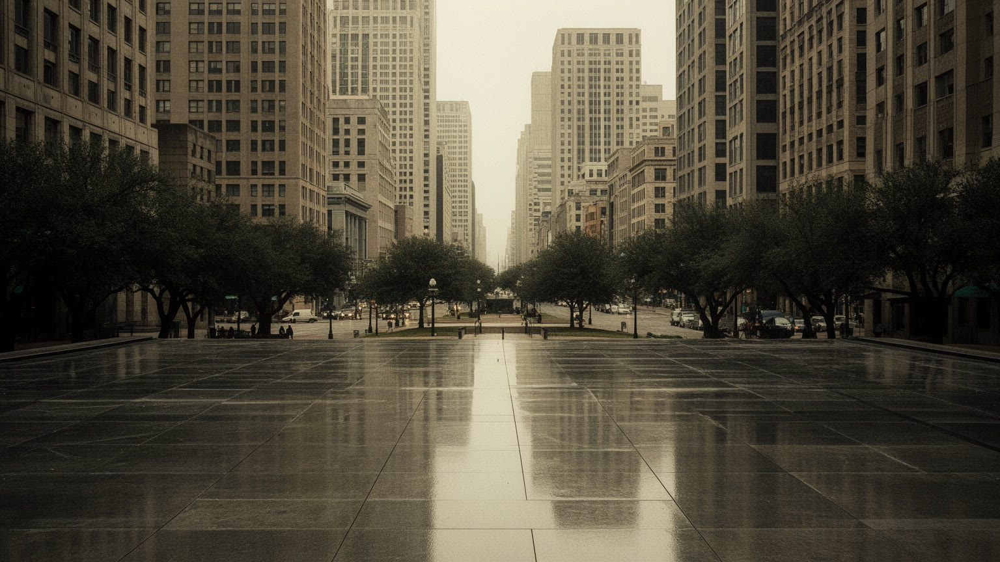
ダラスの都市記憶で避けられないのが、一九六三年十一月二十二日のケネディ大統領暗殺である。ディーリー広場と旧教科書倉庫は、世界史の一瞬が都市の街路に刻まれた場所として、多くの旅行者を引き寄せる。暗殺の記憶は観光名所である前に、ダラスという街が長く背負ってきた市民的な重荷である。当時の政治的な緊張、冷戦、公民権運動、南部保守、メディア報道は、事件への見方を複雑にした。市民の中には、都市全体が暗いイメージで語られることに抵抗を感じた人もいれば、記憶を公開し、検証し、教育へ変える必要を訴えた人もいた。現在の博物館や広場は、陰謀論を消費する場所ではなく、民主主義、暴力、メディア、追悼、都市の責任を考える場であるべきだ。ダラスはその後、企業移転と郊外成長で大きく変わったが、ディーリー広場に立つと、都市の名が世界の悲劇と不可分になった事実を感じる。観光客が写真を撮る同じ道路は、住民にとって通勤路であり、歴史の場所でもある。記憶を扱う都市は、忘れることでも自責だけに沈むことでもなく、事実を保存し、次の世代に問いを渡す必要がある。ダラスのJFK記憶は、華やかな成長都市の中に残る静かな裂け目であり、市民が自分の過去をどう引き受けるかを示す試金石である。広場の静けさは、都市の宣伝よりも長く残る問いを訪問者に投げかける。
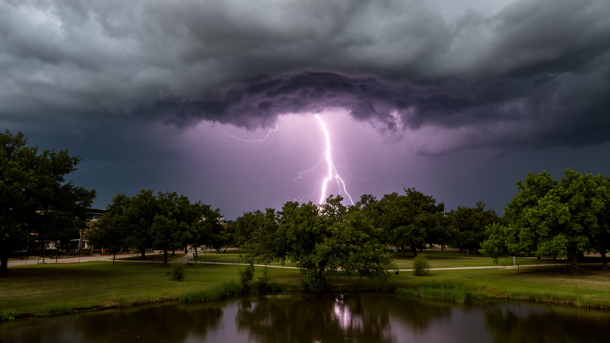
ダラスの気候は、サンベルトの成長を支える明るさだけでは説明できない。夏は長く暑く、熱波は屋外労働者、高齢者、子ども、冷房費を抑える世帯に大きな負担をかける。広い道路、駐車場、低密度の住宅地は熱をためやすく、樹木の少ない地区ほど体感温度は厳しくなる。春から秋にかけては雷雨、雹、強風、竜巻リスクがあり、屋根、車、送電線、保険料、学校の休校判断に影響する。乾いた時期には水資源や芝生の維持も問題になる。テキサスの電力網は猛暑時の冷房需要と冬の寒波の両方に備える必要があり、停電は医療、在宅勤務、食料保存、交通信号まで揺るがす。気候リスクは自然現象であると同時に、住宅の断熱、所得、保険加入、車の有無、英語情報へのアクセスが絡む社会問題である。新しい郊外住宅が増えるほど、排水、道路、緑地、冷房負荷も増える。ダラスの気候を読むには、晴天の青空と高温警報を同時に見る必要がある。暑さに強い都市になるには、日陰、樹冠、冷房避難所、公共交通、労働安全、送電の信頼性、洪水対策を生活圏の中で整えなければならない。企業都市の効率は、天候の極端化に耐えるインフラと住民の健康があって初めて成り立つ。学校の体育、建設現場、配達の時間、ペットを連れた散歩まで、暑さは日常の細部を変える。気候への備えは災害時だけでなく、毎日の設計の問題である。
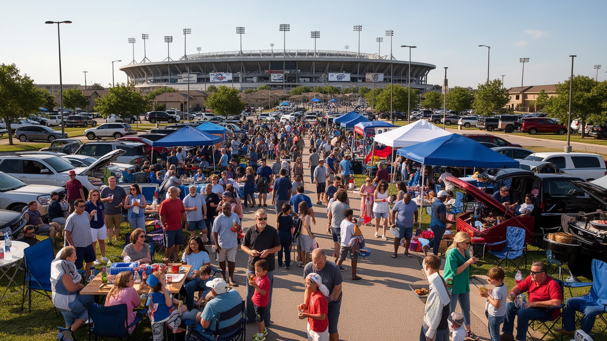
ダラス都市圏では、スポーツが広い郊外生活を一時的に結び直す。アメリカンフットボール、バスケットボール、野球、アイスホッケー、サッカー、大学スポーツは、テレビ、バー、職場の会話、家族の週末、子どものクラブ活動を通じて日常に深く入っている。巨大スタジアムは観光資源であり、イベント経済の装置でもあるが、試合の日には交通規制、駐車場、警備、清掃、飲食、ホテル、配車が一斉に動く。チームへの愛着は都市の一体感を作る一方、スタジアム建設の公的負担、チケット価格、郊外立地、労働条件をめぐる議論も伴う。スポーツ文化は富裕な観戦だけでなく、高校フットボール、地域リーグ、学校のバンド、教会の集まり、家族のバーベキューとつながっている。ダラスの日常は車で移動する距離が長く、近隣の公共広場で偶然会う機会は限られやすい。だから、試合やコンサートのような大きなイベントは、分散した都市圏に共通の話題を与える。スポーツを読むことは、単に有名チームを並べることではない。誰が会場に行けるのか、誰がサービスを提供するのか、子どもが安全に練習できる場所はあるのか、郊外の移動負担をどう受け止めるのかを見ることである。歓声は都市の誇りであり、同時に広すぎる生活圏をつなぐための社会的な接着剤でもある。勝敗の翌朝、職場や学校で交わされる短い会話も、都市の共同性を作る。
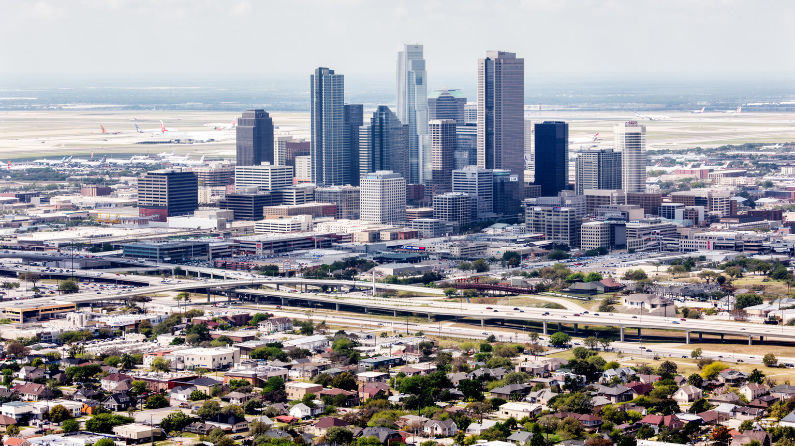
ダラスを一つの言葉で語れば、サンベルトの企業都市である。海港や古い首都の権威ではなく、土地、空港、高速道路、税制、企業移転、郊外住宅、学校区、イベント、金融、不動産を組み合わせて成長してきた。中心部の高層ビルはその象徴だが、都市の実体はDFW空港、倉庫、企業キャンパス、南部ダラスの教会、ラティーノ市場、フォートワース側の産業、郊外の住宅地、暑い道路の上に広がっている。ダラスの強みは、意思決定と移動が速く、企業が拠点を置きやすいことにある。一方で、低密度の拡大、車依存、所得格差、人種別の投資差、気候リスク、公共交通の弱さは、成長の影で大きくなる。JFKの記憶は、企業都市の明るい自己像に歴史的な問いを残し、芸術地区やスポーツは、分散した生活圏に共有できる場を作ろうとする。ダラスを読むには、成功を称賛するだけでも、郊外化を批判するだけでも足りない。なぜ人と企業が集まり、どの道路と空港で動き、誰が住宅と学校を選べ、誰が暑さと長い通勤を負担するのかを重ねて見る必要がある。広い平原の都市は、自由と機会を大きく見せる。その自由がより多くの住民に届くかどうかが、これからのダラスの重要な尺度になる。都市圏の未来は、成長を続けること自体より、成長の距離と費用を誰に背負わせるのかで決まる。その問いを追うほど、ダラスは単なる好景気の都市ではなく、二十一世紀のアメリカ都市の実験場として見えてくる。